Fretbelly
A small creature that eats your worries, and shows you how few of them ever come true.
- Role
- Research, design and build
- Platform
- iOS, React Native and Expo
- Status
- On iPhone, App Store soon
- Privacy
- No account, no tracking
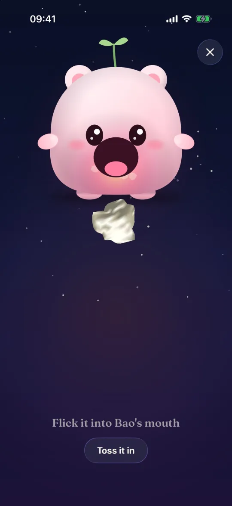


Research
Comfort characters
A cute character holds your worries, but there is no reality check and no proof.
Worry journals
Plain journals with outcome charts, often behind a paywall and without a character.
Worry games
A character eats a typed worry, but nothing checks what happened afterwards.
How it works
Put it down
Write a worry, by typing or by hand, crumple it and toss it to the creature. It holds the worry for you.
Worry later
Once a day, at your own worry time, you look at what it holds. Outside that time the jar stays sealed.
Check reality
When a worry's day passes, it asks: did it happen? Each one that did not becomes a lantern in your sky.
See the truth
Your own number builds up, like 17 worries eaten and 2 came true. The creature grows from checking, never from streaks.
Fretbelly in action
A real screen recording from the iPhone simulator. Tap a step to replay just that part.
Screens
Feed it a worry
- Write it down, by typing or by hand, rate how likely it feels, then crumple the paper and toss it into its mouth.


Did it happen?
- When a worry's day has passed, Fretbelly asks. Each one that did not happen becomes a glowing lantern in your sky.
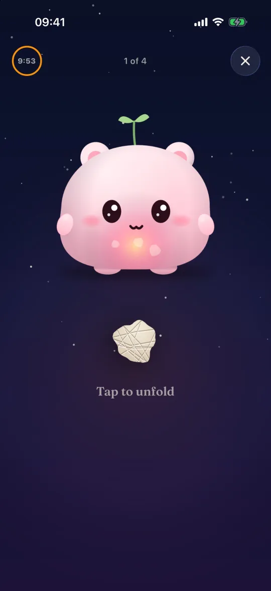
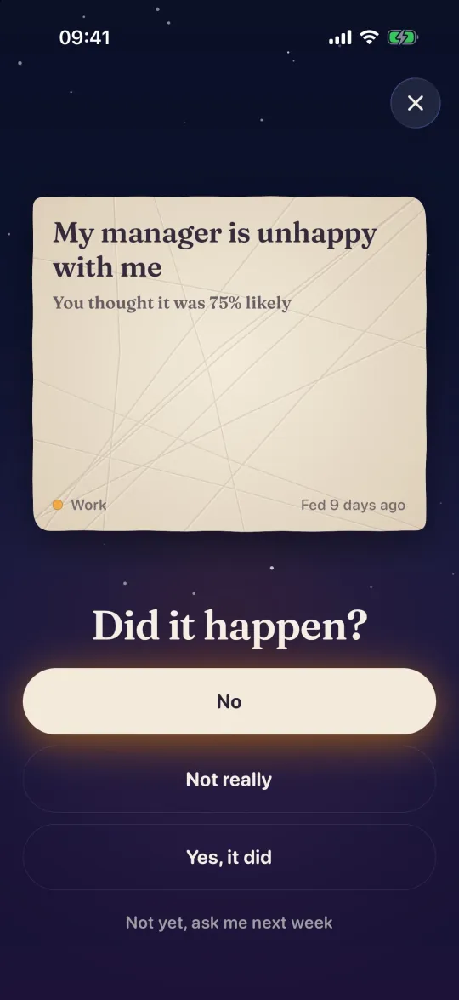
Seeing the truth
- Home keeps the count in plain sight, like 17 worries eaten and 2 came true.
- A share card turns it into one number, like 17% came true, with none of the worries on it.
- Each month's lanterns join into that month's sky, one for every worry that did not happen.
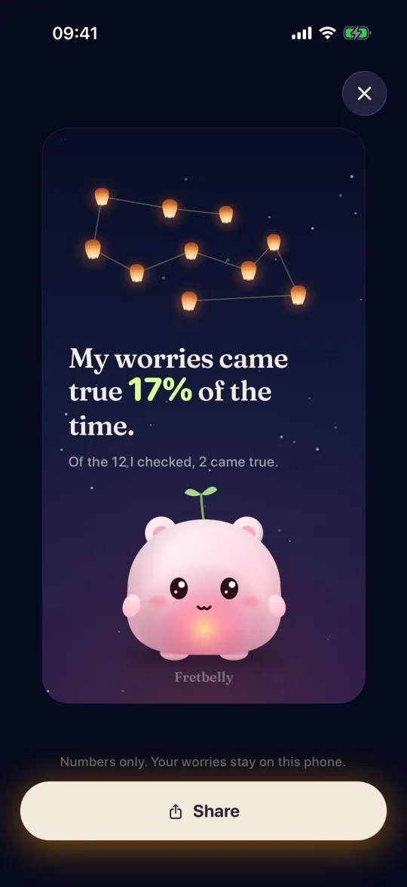
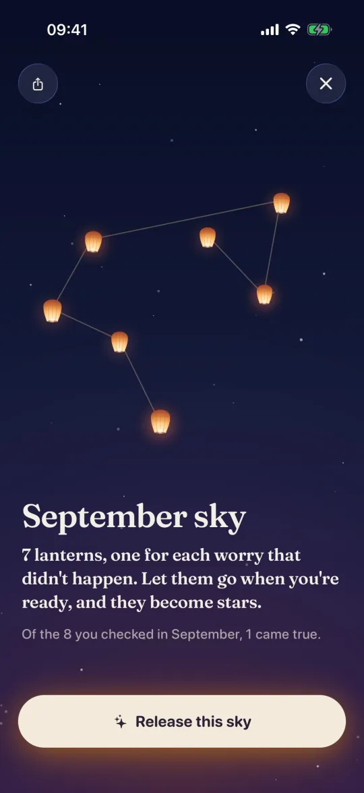
Meeting the creature
- Press and hold to wake the creature on the very first screen.
- It asks to tap you once a day at worry time, and the notification never shows what you wrote.
- Pick one of ten colours, from Lantern to Cocoa.
- Name it and it says hello, with looks like a scarf or a beanie to earn later.
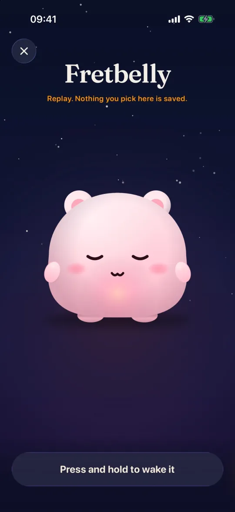
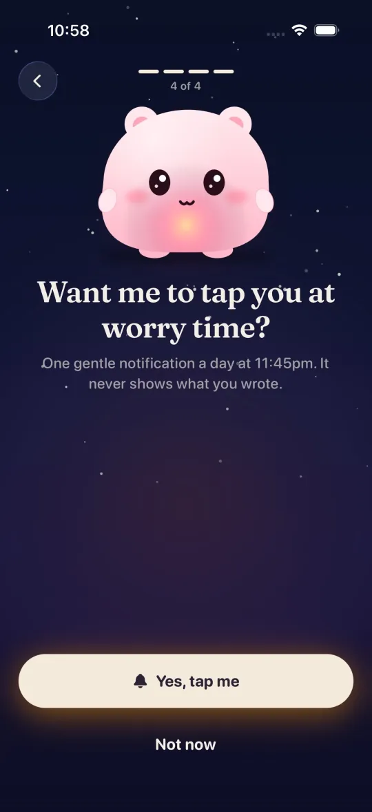
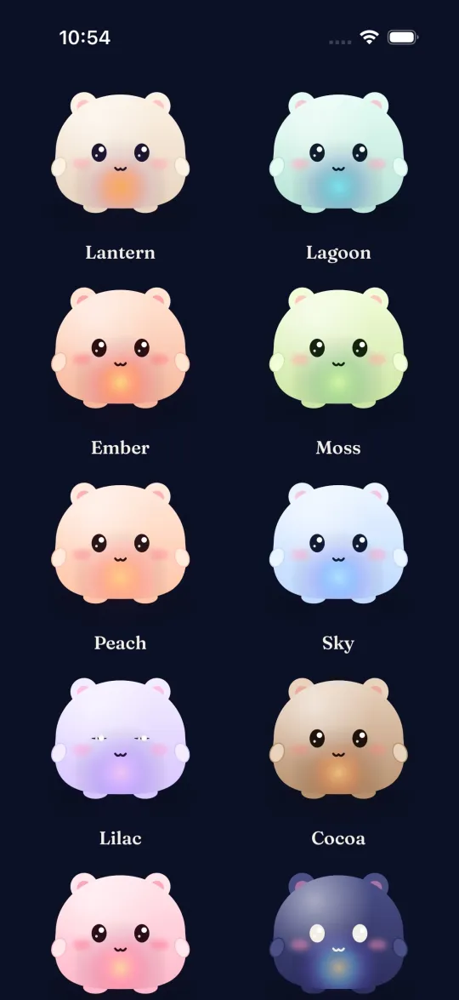
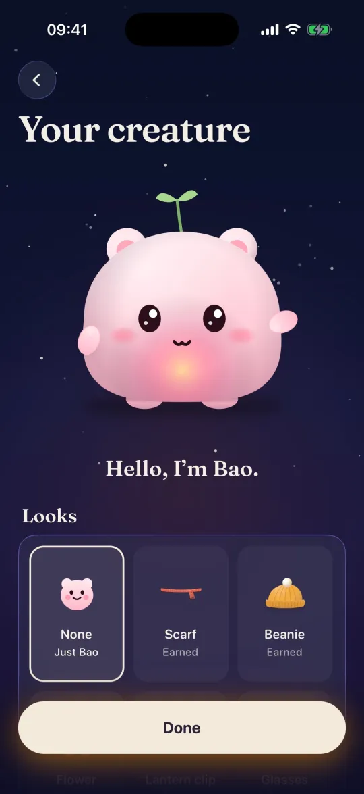
Worry time
- Choose one time a day for worrying, like 11:45pm.
- At worry time the jar opens: everything you fed it, and the proof of how much never happened.
- Outside that time the jar stays sealed, and opening it early is a choice, not the default.

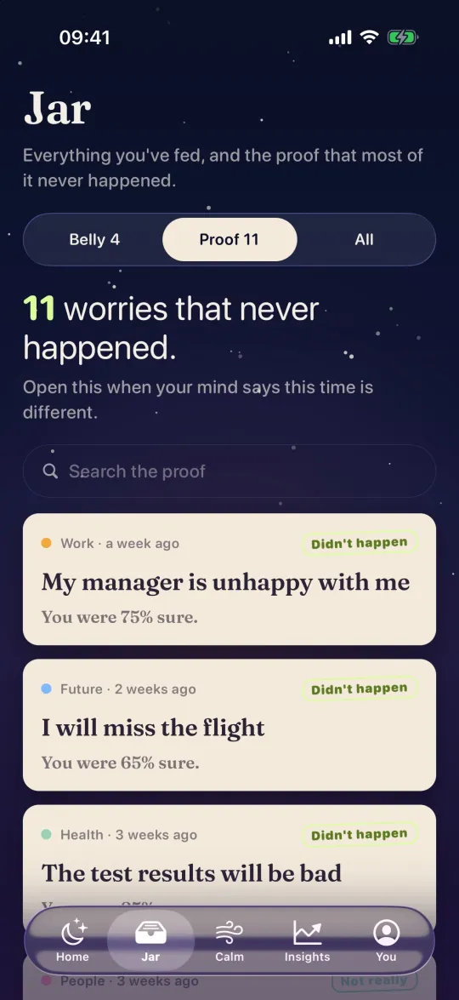

Calm tools for hard days
- The evening before a hard day, it shows proof: how many similar worries did not happen.
- 5 things you can see: a grounding exercise that brings you back to the room.
- Calm gathers short exercises, like one slow minute of breathing with Bao.
- Is it in my control? Drag each worry to the pile where it belongs.
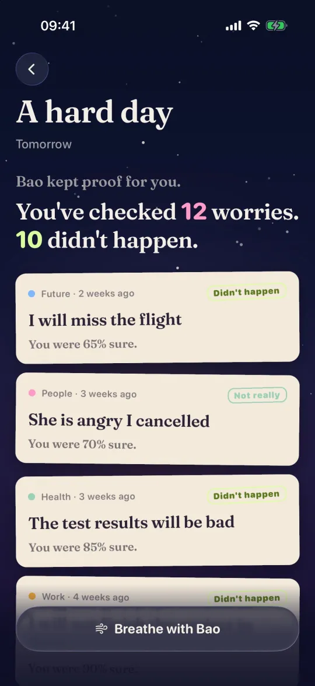
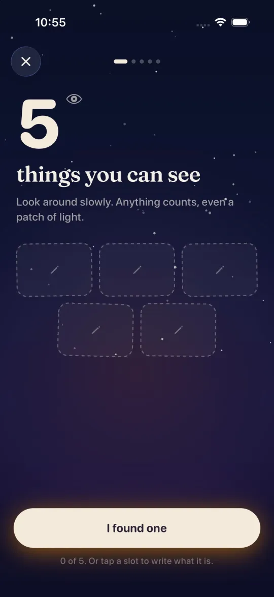

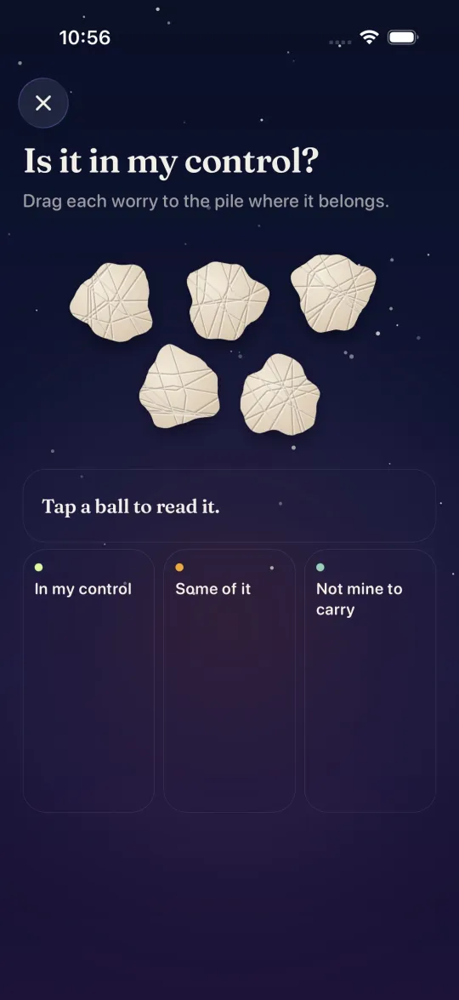